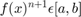
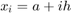
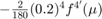
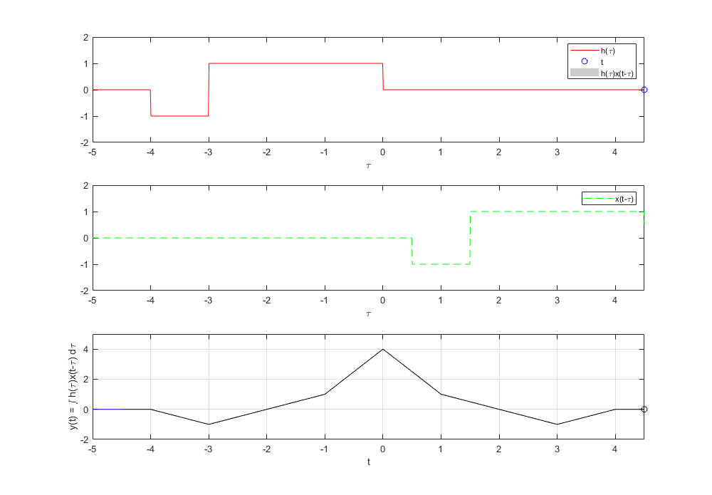

P04: Convolución y Correlación de señales
INTEGRANTES:
- Carlos Josafath López Favila
- Iván Rodrigo Santacruz Bravo
Contents
- OBJETIVOS
- INTRODUCCIÓN
- Punto 1: Ejercicio 1 de la PR04
- Punto 2: Ejercicio e) de la PR05
- Punto 3 Convolución de las señales (c) con (d) del problema 3.1-1
- Punto 4 Correlacion de las señales (c) con (d) del problema 3.1-1
- Punto 5 Convolucion de las señales (c) con (d) del problema 3.1-1 usando CONV
- Apéndices
OBJETIVOS
- Conocer métodos básicos de integración numérica
- Manipulación de instrucciones en MATLAB
- Simular convoluciones y correlaciones de señales continuas
- Simular convoluciones y correlaciones de señales discretas
INTRODUCCIÓN
Mètodos Numèricos Cuando aplicamos la teoria del calculo en la realidad se pueden dar casos donde se tengan problemas cuya solucion no pueda ser encontrada por alguna formula o mètodo del calculo, es por ello que los matematicos se dieron a la tarea de desarrollar los métodos numéricos. Se trata de una serie de cálculos para acercarnos lo más posible a una solución numérica con una precisión razonablemente buena. Los métodos numéricos son utilizados en ingeniería para facilitar la resolución de problemas que conllevan una enorme cantidad de cálculos, lo que permite ahorrar tiempo.
Teorema fundamental del Cálculo
El teorema dice asi "Si f(x) es integrable y entonces:
En este mètodo se centra en encontrar aproximaciones a integrales de funciones que no son posibles de resolver por algun mètodo conocido, como por ejemplo:
syms t; ft = exp(-t^2); fplot(ft); title('f(t)'); grid on hold off clear ; clc;
Como no es posible encontrar F(x) entonces se procede a hacer una aproximacion con un polinomio
Con P(x)=1 entonces
Tenemos la siguiente Gràfica
Donde el àrea sobreada de color naraja es el àrea de P(x) y el àrea en color verde seria el àrea de f(x)
Teniendo esto podemos decir con seguiridad que
Y podemos dividir el rectàngulo generado por el area de P(x) en 4 y hacer una aproximacion mas acertada
*Fòrmulas Cerradas de Newton-Cotes*
En este mètodo se utilizan los polinomios de interpolacion de Lagrange para determinar
Establece que  existe
Donde f(x) se puede escribir como:
Donde seria una aproximacion a la funcion mas un termino de error , , , , , , , es el grado del polinomio
Para que de este modo en lugar de determinar la integral de f(x), se hace una aproximacion por medio de los polinomios de lagrange
Regla del trapecio
Este mètodo es el mètodo de Newton-Cotes para un valor de que nos da la siguiente fòrmula:
Donde
Retomando el ejemplo anterior
Para Resolver
se tiene que
syms t E ft=exp(-t^2); d2ft=diff(ft,2); FT=matlabFunction(ft); n=1; a=-1; b=1; x0=a; x1=b; h=(b-a)/n; i=0:1:n; xi=a+i*h; int=(h/2)*(FT(x0)+FT(x1)) INT=round(int,4)-((h^3)/12)*subs(d2ft,t,E) clc; clear;
int =
0.7358
INT =
(4*exp(-E^2))/3 - (8*E^2*exp(-E^2))/3 + 3679/5000
Donde se tiene que es el tèrmino de error que se debe de sumar o restar a la aproximacion con
Regla de Simpson
Cuando se tiene que n=2 en el mètodo de Newton-Cotes se le denomina Regla de Simpson
Donde
Aplicando la Regla de simpson para encontrar la aproximación de
syms t E ft=exp(-t^2); d2ft=diff(ft,4); FT=matlabFunction(ft); n=2; a=-1; b=1; h=(b-a)/n; i=0:1:n; I=length(i); x0=a; x1=a+(h*i(I-1)); x2=b; int=(h/3)*(FT(x0)+4*FT(x1)+FT(x2)) INT=round(int,4)-((h^5)/90)*subs(d2ft,t,E) clear; clc;
int =
1.5786
INT =
(8*E^2*exp(-E^2))/15 - (2*exp(-E^2))/15 - (8*E^4*exp(-E^2))/45 + 7893/5000
Donde se tiene que es el tèrmino de error que se debe de sumar o restar a la aproximación con
Regla de 3/8 de Simpson
Cuando de realiza una interpolacion para obtener una aproximacion con un polinomio de 3er grado se le llama como regla de 3/8 de Simpson que nos da la siguiente fòrmula
Donde
Aplicando la Regla de simpson para encontrar la aproximacion de se tiene:
syms t E ft=exp(-t^2); d2ft=diff(ft,4); FT=matlabFunction(ft); n=3; a=-1; b=1; h=(b-a)/n; i=0:1:n; I=length(i); x0=a; x1=a+(h*i(I-1)); x2=a+(h*i(I-2)); x3=b; int=((3*h)/8)*(FT(x0)+3*FT(x1)+3*FT(x2)+FT(x3)) INT=round(int,4)-((3*(h^5))/80)*subs(d2ft,t,E) clear clc;
int =
1.5262
INT =
(32*E^2*exp(-E^2))/135 - (8*exp(-E^2))/135 - (32*E^4*exp(-E^2))/405 + 7631/5000
Donde se tiene que es el tèrmino de error que se debe de sumar o restar a la aproximacion con
Regla del trapecio compuesta
La idea de este metodo es dividir el intervalo principal en intervalos para obtener una mejor aproximacion
Donde , , es el nùmero de subintervalos, y
EJEMPLO
Retomando el ejercicio inicial y realizando 10 subintervalos tenemos que:
syms t u ft=exp(-t^2); d2ft=diff(ft,2); FT=matlabFunction(ft); n=10; a=-1; b=1; j=1:(n-1); h=(b-a)/n; xj=a+(j*h); int= (h/2)*(FT(a)+2*sum(FT(xj))+FT(b)) INT= round(int,4)-((b-a)/12)*(h^2)*subs(d2ft,t,u) clear clc
int =
1.4887
INT =
exp(-u^2)/75 - (2*u^2*exp(-u^2))/75 + 14887/10000
Donde es el tèrmino de error y
Regla de Simpson compuesta
Es la misma idea de la regla de simpson pero con el formato de la regla del trapecio compuesta (dividir en subintervalos)
Pero con la condicion de que el nùmero de subintervalos sea par teniendo asi lo siguiente:
![$\int_{a}^{b}f(x)dx= \frac{h}{3}[f(a)+2\sum_{j=1}^{\frac{n}{2}-1}f(x_{2j})+4\sum_{j=1}^{\frac{n}{2}}f(x_{2j-1})+f(b)]-\frac{{b-a}}{180}h^{4}f^{4'}(\mu)$](ASySPracP04CarlosJosafathLopezFavila_eq12091319815719879344.png)
Donde , , es el nùmero de subintervalos, y EJEMPLO
Retomando el ejercicio inicial y realizando 10 subintervalos tenemos que:
syms t u ft=exp(-t^2); d2ft=diff(ft,4); FT=matlabFunction(ft); n=10; a=-1; b=1; ji=1:2:(n-1); jp=2:2:(n-1); h=(b-a)/n; xjp=a+(jp*h); xji=a+(ji*h); int= (h/3)*(FT(a)+2*sum(FT(xjp))+4*sum(FT(xji))+FT(b)) INT= round(int,4)-((b-a)/180)*(h^2)*subs(d2ft,t,u)
int =
1.4937
INT =
(8*u^2*exp(-u^2))/375 - (2*exp(-u^2))/375 - (8*u^4*exp(-u^2))/1125 + 14937/10000
Donde  es el tèrmino de error y
Cuadratura Gaussiana
En este mètodo se usa los polinomios de legendre para encontrar una aproximacion a la integral en un valor determinado de tal manera que:
Donde son las raices del polinomio de,Legendre
Los polinomios de legendre estan definidos como:
Y la formula se reduce a la suma de la funcion evaluada en en coeficiente de legendre multiplicado por las raices del polinomio al que se aproximo
EJEMPLO Si se quiere encontrar con una aproximacion al polinomio de legendre de grado 2 entonces:
syms t
ft=exp(-t^2);
FT=matlabFunction(ft);
Cnj=[1,1];
rnj=[0.5773502692,-0.5773502692];
Frnj=FT(rnj);
Aprox=sum(Cnj.*Frnj)
clear
clc;
Aprox =
1.4331
%Si se quiere encontrar $\int_{-1}^{1}e^{-x^{2}}dx$ con una aproximacion % al polinomio de legendre de grado 3 entonces: % syms t ft=exp(-t^2); FT=matlabFunction(ft); rnj=[0.7745966692,0,-0.7745966692]; Cnj=[0.55555555555556,0.888888888889,0.55555555555556]; Frnj=FT(rnj); Aprox=sum(Cnj.*Frnj) clear clc;
Aprox =
1.4987
Punto 1: Ejercicio 1 de la PR04
Para el PR04 reporte la grafica de la simulación númerica de la convolución y compare con el resultado análitico que obtuvo para el problema 1, esto es, su práctica tendrá que incluir una llamada a la funciónn convconm y posteriormente se tendrá que mostrar (mediante el Publish) la gráfica tanto de las señales involucradas como el resultado de la convolución, y en esta última gráficara su resultado analitico, se tendrá que incluir el resultado analitico. Realizamos la convolución de dos señales:

Nuestras funciónes a aplicarles convolución son:
f=@(t) exp(-t).*(heaviside(t)-heaviside(t-1)); g=@(t) t.*(heaviside(t+1)-heaviside(t-1));
y la señal analítica de convolución que obtuvimos con los cálulculos es:
r=@(t) (-1+2*exp(-1-t)+t).*(-1<=t & t<0) +((2+exp(1).*(t-1)-t)/exp(1)).*(0<=t & t<1)+((2-t)/exp(1)).*(1<=t & t<2);
Nuestra función convconm necesita distintos parametros de entrada: convconm(x,h,i1,f1,i2,f2,f) Donde:
- x es la señal x(t)
- h es a señal h(t)
- i1 es el punto de inicio de x(t)
- f1 es el punto final de x(t)
- i2 es el punto de inicio de h(t)
- f2 es el punto final de h(t)
- f es la señal analítica de convolución
Añadimos como parametro la función analítica para validar los resultados obtenidos con los cálculos hechos y la señal obtenida por la función de convolución.
Aplicando Convolución:
convconm(f,g,0,1,-1,1,r)
El proceso de convolución se ve como:
Punto 2: Ejercicio e) de la PR05
Para el PR05 reporte la grafica de la simulación númerica de la correalción y compare con el resultado análitico que obtuvo para el problema e), esto es, su práctica tendrá que incluir una llamada a la funciónn convconm y posteriormente se tendrá que mostrar (mediante el Publish) la gráfica tanto de las señales involucradas como el resultado de su correlación, y en esta última graficara su resultado analitico, se tendrá que incluir el resultado analitico.
e) Realiza la auto correlación de
Definición de la función x(t):
x=@(t) heaviside(t)-2*heaviside(t-3)+heaviside(t-4); % % y por definición definimos x1(t) como x(-t) % x1=@(t) heaviside(-t)-2*heaviside(-t-3)+heaviside(-t-4);
La función obtenida de forma analítica es:
r=@(t) (-t-4).*(-4<=t & t<-3)+(t+2).*(-3<=t & t<-1)+(3*t+4).*(-1<=t & t<0)+(-3*t+4).*(0<=t & t<1)+(-t+2).*(1<=t & t<3)+(t-4).*(3<=t & t<=4);
Y ocupando la función convconm:
convconm(x,x1,0,4,-4,0,r)
Punto 3 Convolución de las señales (c) con (d) del problema 3.1-1
clear; n=-3:3; a=3.*n; b=[0 4 2 0 2 4 0]; subplot(1,2,1) stem(a); subplot(1,2,2) stem(b);
El resultado teorico nos da:
C=[0 -36 -42 -24 -24 -36 0 36 24 24 42 36 0]; figure stem(-6:6,C)
convdisc([n;a],[n;b],C); clc; clear;

El proceso de convolución se ve como:
Punto 4 Correlacion de las señales (c) con (d) del problema 3.1-1
n=-3:3; a=3.*n; b=[0 4 2 0 2 4 0]; c=fliplr(b); subplot(1,2,1) stem(a); subplot(1,2,2) stem(c);
El resultado teorico nos da:
C=[0 -36 -42 -24 -24 -36 0 36 24 24 42 36 0]; figure stem(-6:6,C)
convdisc([n;a],[n;c],C)
El proceso de convolución se ve como:

Punto 5 Convolucion de las señales (c) con (d) del problema 3.1-1 usando CONV
n=-3:3;
a=3.*n;
b=[0 4 2 0 2 4 0];
x=conv(a,b);
subplot(1,3,1)
stem(n,a)
subplot(1,3,2)
stem(n,b)
subplot(1,3,3)
stem(-6:6,x)
%

Apéndices
function convconm(x,h,i1,f1,i2,f2,f) %i1 es el punto de inicio en t de la señal x(t) %f1 es el punto final en t de la señal x(t) %i2 es el punto de inicio en t de la señal h(t) %f2 es el punto final en t de la señal h(t) %f es la señal del resultado analítico obtenido T1=f1-i1;%intervalo de la primer señal finita T2=f2-i2;%intervalo de la segunda señal finita figure (1) % Se crea una figura para hacer las gráficas dtau = 0.005; % Base de los rectangulos para realizar la integral tau = i1+i2-1:dtau:f1+f2+0.5; % Intervalo de visualización del resultado ti = 0; % Indice para el vector de resultados tvec = i1+i2-0.5:.1:f1+f2+0.5; % traslaciones de t, cuantas integrales se calculan y = NaN*zeros(1, length (tvec)); % Resultados de acuerdo a cuantos t % encuentra valores máximos y minimos de las funciones para los limites % de graficación l=i1+i2:0.1:f1+f2; A=x(l); B=h(l); C=f(l); max1=max(A); max2=max(B); max3=max(C); min1=min(A); min2=min(B); min3=min(C); hFig = figure(1); set(hFig, 'Position', [0 0 1000 1000]) filename = 'convocontinua.gif'; ttt=1; for t = tvec % Cantidad de traslaciones ti = ti+1; % Indice para guardar el resultado (indice del tiempo) xh = x(t-tau).*h(tau); % resultado de la multiplicación lxh = length(xh); % longitud del resultado y(ti) = sum(xh.*dtau); % Base por altura, aproximación de la integral subplot (3,1,1), % gráfica de 2 x 1 (primera) plot(tau, h(tau), 'r-', t, 0, 'ob'); %graficas axis ([tau(1) tau(end) min2-1 max2+1]); % límites de los ejes patch([tau(1:end-1); tau(1:end-1); tau(2:end); tau(2:end)],... [zeros(1,lxh-1);xh(1:end-1);xh(2:end);zeros(1,lxh-1)],... [.8 .8 .8], 'edgecolor', 'none'); xlabel('\tau'); % Texto del eje X legend('h(\tau)','t', 'h(\tau)x(t-\tau)')% Caja de Texto subplot(3,1,2) plot(tau, x(t-tau), 'g--'); %grafica función móvil axis ([tau(1) tau(end) min1-1 max1+1]); % límites de los ejes xlabel('\tau'); % Texto del eje X legend( 'x(t-\tau)')% Caja de Texto subplot (3, 1, 3) % gráfica de 2 x 1 (segunda) plot (tau,f(tau),'b',tvec, y, 'k', tvec (ti), y(ti), 'ok'); xlabel ('t'); ylabel ('y(t) = \int h(\tau)x(t-\tau) d\tau'); axis ([tau(1) tau(end) min3-1 max3+1]); % límites del eje grid; % malla drawnow; % efecto de movimiento continuo frame = getframe(hFig); im = frame2im(frame); [imind,cm] = rgb2ind(im,256); % Write to the GIF File if ttt == 1 imwrite(imind,cm,filename,'gif', 'Loopcount',inf); else imwrite(imind,cm,filename,'gif','WriteMode','append'); end ttt=ttt+1; end end
function convdisc(x1,x2,x4) Tam1 = size(x1(1,:)); Tam2 = size(x2(1,:)); T1 = Tam1(2); T2 = Tam2(2); T3 = T1+T2-1; vec1 = zeros(1,T1+2*T2-2); vec2 = zeros(1,T1+2*T2-2); Tec2 = -(T2-1):(T1+T2-2); size(vec2); size(Tec2); x3=zeros(2,T3); x3(1,:)=0:T3-1; x3(1,:)=x3(1,:)+x1(1,1)+x2(1,1); vec1(1,T2:T2+T1-1)=x1(2,:); figure (1) hFig = figure(1); set(hFig, 'Position', [0 0 1000 1000]) filename = 'testAnimated.gif'; ttt=1; for m=0:T1+T2-2 vec2(1,1+m:T2+m)=fliplr(x2(2,:)); x3(2,m+1)=sum(vec1.*vec2); subplot(4,1,4) stem(x3(1,:),x4,'k','LineWidth',3) hold on subplot(4,1,4) stem(x3(1,:),x3(2,:),'r','LineWidth',3) axis([Tec2(1),T1+2*T2-2, min(x3(2,:))-1 max(x3(2,:))+1]) ylim('auto') ylabel('x_3[n]','FontWeight','bold','FontSize',16); xlabel('n','FontWeight','bold','FontSize',16); grid on subplot(4,1,1) stem(x2(1,:),x2(2,:),'k','LineWidth',3) ylabel('x_2[m]','FontWeight','bold','FontSize',16); xlabel('m','FontWeight','bold','FontSize',16); title('CONVOLUCIóN','FontWeight','bold','FontSize',16); grid on axis([Tec2(1),T1+2*T2-2, min(x2(2,:))-1 max(x2(2,:))+1]) ylim('auto') subplot(4,1,2) stem(x1(1,:),x1(2,:),'b','LineWidth',3) ylabel('x_1[m]','FontWeight','bold','FontSize',16); xlabel('m','FontWeight','bold','FontSize',16); grid on axis([Tec2(1),T1+2*T2-2, min(x1(2,:))-1 max(x1(2,:))+1]) ylim('auto') subplot(4,1,3) stem(Tec2,vec2(1,:),'g','LineWidth',3) axis([Tec2(1),T1+2*T2-2,min(vec2)-1, max(vec2)+1 ]) ylim('auto') ylabel('x_2[n-m]','FontWeight','bold','FontSize',16); xlabel('m','FontWeight','bold','FontSize',16); grid on drawnow; pause(0.1) vec2 = zeros(1,T1+2*T2-2); frame = getframe(hFig); im = frame2im(frame); [imind,cm] = rgb2ind(im,256); % Write to the GIF File if ttt == 1 imwrite(imind,cm,filename,'gif', 'Loopcount',inf); else imwrite(imind,cm,filename,'gif','WriteMode','append'); end ttt=ttt+1; end end